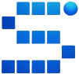
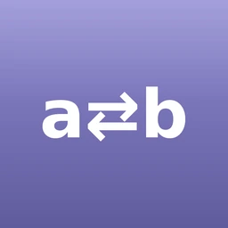
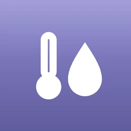

SPECTRA
Smart Platform for Experimental Control, Trial Research & Analysis.
CropID
ANOVA tests of various designs, post-hoc (Tukey's HSD, Fisher's LSD, Duncan's DMRT, & SNK), etc.
Kolmogorov-Smirnov Test
Non-parametric test of the equality of continuous one-dimensional probability distributions.
Fisher's LSD
Uji lanjut (post-hoc) Fisher's Least Significant Difference (beda nyata terkecil).
Tukey's HSD
Uji lanjut (post-hoc) Tukey's Honestly Significant Difference (beda nyata jujur).
Student–Newman–Keuls
Uji lanjut (post-hoc) Student–Newman–Keuls (SNK) Test.
Duncan's MRT
Uji lanjut (post-hoc) Duncan's Multiple Range Test (rentang berganda Duncan).
Scott-Knott
Uji lanjut (post-hoc) Scott-Knott otomatis beserta hasil penggugusan, λ, dan χ.

Balik Huruf Kedelai
Balik susunan huruf notasi (lettering) untuk analisis data penelitian kedelai.
Heatmap
Interactive heatmap with real-time data and customization settings updates.

PsychroMol
An interactive Psychrometric Chart and Mollier Diagram to analyze and determine the thermodynamic properties of moist air.
Lux, PPFD, & IRR Converter
Illuminance (lux), PPFD (µmol·m⁻²·s⁻¹), & Total Irradiance (W·m⁻²) converter in different agric. LED's.
Light Spectrum Chart
Chart showing the results of light spectrum values (irradiance and photon flux density).
Agri Map
Determining suitable plants with a world map based on AI predictions using real-time-world data.
Task Planner
Comprehensive responsive task planner with monthly or yearly views, saved to Drive.
Finance Tracker
Interactive finance tracker to manage finances with custom time and save (local file & localStorage).
TOPIK Practice
Learn Korean to prepare for the TOPIK I and TOPIK II tests (reading and writing).
Your Secure Digital Vault. Support text, image, video, and pdf.
CV Generator
ATS-friendly CV builder with live A4 preview, PDF and Word export.
PDF Combiner
Combine multiple PDFs without uploading or downloading.
DOI to Cite
Convert multiple DOI (Digital Object Identifier) links to APA 7th style citations for bibliography or references.
OCR (Image to Text)
Converts images of text, whether printed, typed, or handwritten, into text. Powered by Tesseract.js.
QR Code Generator
Interactive QR code generator with various customizations. Powered by: kozakdenys/qr-code-styling.
Bulk File Renamer
Rename multiple files (bulk) without uploading or downloading.
Unit Converter
Complete unit converter: IU, imperial, and US Customary.
File Analyzer
Very comprehensive hidden file meta data analysis.